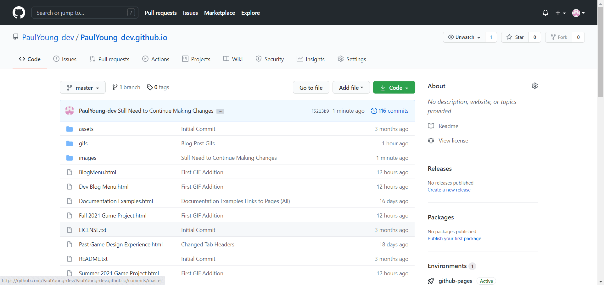

Blog Hours
This page contains my dev-blog information, where I break down my weekly hours, overall highlighting what I accomplished each week.
Continue reading to see how my hours are broken down.
Mid-Pre-Beta 2--Pre-Gold 1 (April 5th, 2021 - April 18th, 2021)
Week 1: 4 Total Work Hours
*Apr. 5th - Monday: 2 Hours total, For 2 hours I made website fixes in general, updated prior blogs with content, and made a photo fix on the Pre-Alpha 2 Sprint blog.
*Apr. 6th - Tuesday: N/A
*Apr. 7th - Wednesday: N/A
*Apr. 8th - Thursday: N/A
*Apr. 9th - Friday: N/A
*Apr. 10th - Saturday: N/A
*Apr. 11th - Sunday: 2 Hours total,
For 1 hour I did playtesting before the meeting.
.PNG)
.PNG)
.png)
.png) For 1 hour I attended the weekly WolverineSoft Studio meeting. For this meeting I mainly talked with the Game Design department to go over how we felt our designs were, what we should look for in any future playtesting, and overall what we could do to help the project in its final days.
For 1 hour I attended the weekly WolverineSoft Studio meeting. For this meeting I mainly talked with the Game Design department to go over how we felt our designs were, what we should look for in any future playtesting, and overall what we could do to help the project in its final days.
.png)
.png)
.png)
.png)
.png)
Week 2: 14 Total Work Hours
*Apr. 12th - Monday: N/A
*Apr. 13th - Tuesday: N/A
*Apr. 14th - Wednesday: N/A
*Apr. 15th - Thursday: N/A
*Apr. 16th - Friday: N/A
*Apr. 17th - Saturday: 2.5 Hours total,
For 2.5 hours I conducted playtesting, notified Game Design Director Brandon Schulz of bugs in the game that can be fixed with such short time left, added a few notable bugs onto the Bug Report document in Confluence, and learned how to use ShareX to record gif and video footage of gameplay, as well as how to change various video settings such as a delayed start-time, FPS rates, audio settings, etc.
.png)
.png)
.png)
.png)
.png)
.png)
.png)
.png)
.png)
.png)
.png)
.png)
.png)
.png)
.png)
.png) (I also conducted video evidence of gameplay; I shall add it here once I get Git LFS to work)
(I also conducted video evidence of gameplay; I shall add it here once I get Git LFS to work)
*Apr. 18th - Sunday: 11.5 Hours total, For 5.5 hours straight I made some website updates (on the Blog Menu and new Dev Blog Menu Webpages), learned how to download and installed Unreal Engine 4.6.2 while exploring it a teensy bit, continued working on the website by setting up the Unreal Engine webpage on my website as well as updating the generic6 page (readying it for the upcoming week), deciding on which picture to use for my cover picture for the Winter 2021 project and organizing new screenshots/gifs/video clips/blog posts, and trying to work on the home photos page for my index.html file unfortunately to no avail (yet learned a bit more about HTML code through the process). Immediately after that I attended a 1.5 hour WolverineSoft Studio weekly meeting, which is this project's final meeting as a group. For 1 hour I completed the WolverineSoft Feedback Form and attempted to learn how to use Git LFS. I still haven't gotten the hang of it, yet will eventually. For 1.5 hours I added pictures to the generic3 and generic5 webpage files on this website (2 of the blog post pages) and made other small website fixes. For 1 hour I found an Unreal Engine Tutorial video (which can be found by clicking the link in the Unreal Engine Learning Links page on this website), watched the Lesson 1 portion, and made Gifs, adding them to the Winter 2021 Menu webpage on this website. For 1 hour I made further edits to this website, added the Unreal tutorial with a pic to the Unreal Engine Learning Links page on this website, finished this blog entry by adding pictures and completing the reflection portion, and made other small website edits.
* MID-PRE-BETA 2--PRE-GOLD 1 SPRINT RECAP: TOTAL NUMBER OF HOURS FOR THE PAST 2 WEEKS: *Target Number of Hours: 18 Hours (for 3 Academic Credits 9 Hours Per Week, 9 Hours * 2 Weeks = 18 Hours) *Hours Achieved During this Sprint: 18 Hours (4 from Week 1 + 14 from Week 2 = 18 Hours) IMAGE AND VIDEO EVIDENCE *I finally obtained video and gif evidence! While I unfortunately didn't figure out how to use Git LFS (which I need to in order to upload file sizes larger than 100MB, like some of the playtesting videos I obtained), I have used the gif recording function extensively this week and shall continue using it for any future game-development endeavors.BUGS AND PROBLEMS ENCOUNTERED: *Problem: After the Design was done, there wasn't much left for the Design team to do. Fortunately got to get some playtesting in and continue learning about HTML, website-building, Unreal Engine, and overall game development. *Problem: Balancing work from other classes (this semester I'm taking 21 credits in total). Managed to make time towards the end of this sprint as the game is getting polished up. This procrastination and timing worked in my favor as a Designer, as many of the quality-of-life changes were made towards the end of the process, hence I chose to playtest at the most valuable times. *Bugs: Lots of bugs when playtesting. Fortunately immense progress was made in the 2nd week of this sprint, so much that I would now state that the game is playable, fun, and looks great, even if it still has some noticeable bugs. TIME MANAGEMENT STRATEGIES USED: *Last-minute Hustle (This worked in Design's favor, as our playtesting suggestions are more effective now that the more obvious bugs/flaws are taken care of in the project) *Focusing more on playtesting and personal growth as a student and soon-to-be game designer and/or game developer. *Incubator-time strategy of doing most/all of week's work in 1-2 days (Week 2) SUCCESSFUL TASKS: *Playtesting (provided feedback, saw changes in less than 24 hours for minor bugs) *Overall finishing strong as a now well-rounded Game Designer, confident in recording video evidence now of my work *Keeping up with WolverineSoft Studio hours and maintaining overall grades in heavy dual University of Michigan/Northwestern Michigan College class courseload UNSUCCESSFUL TIME INVESTMENTS: *Lots of playtesting prior to the 2nd week of this sprint conducted in former sprints *Lack of time spent on HTML tutorials (looked up more stuff this week, yet I need to put a lot more time into seriously understanding this coding language) *I still overall don't feel like too much of my time was wasted, except for the time I spent trying to use the Git LFS; for that I'm probably just over-thinking what should be a simple task. STRATEGIES FOR IMPROVING IN FUTURE SPRINTS: *Being more comfortable with recording videos/gifs through practice and making it possible to upload to my devblog website through GIT LFS *Using more time going over tutorials (specifically for Unreal Engine and HTML; as most of my work is design-focused and since I feel familiar with Unity now, I want to learn what types of work Unreal Engine is good for and if it's the engine I want to use for my future entrepreneurial endeavors) *Using more time to research game ideas (Didn't do this as much this sprint) *Continuing to format this website, continuously updating Blog Post formats, and making this look sleek, professional, and marketable over time and ready to use for future Studio projects *Still on learning more about Documentation styles as well as on what skills I want to learn in Unreal Engine (like focus on Audio/Art/Programming/All of It?) *Spend some of my Sprint time on specifically organizing past website progress.